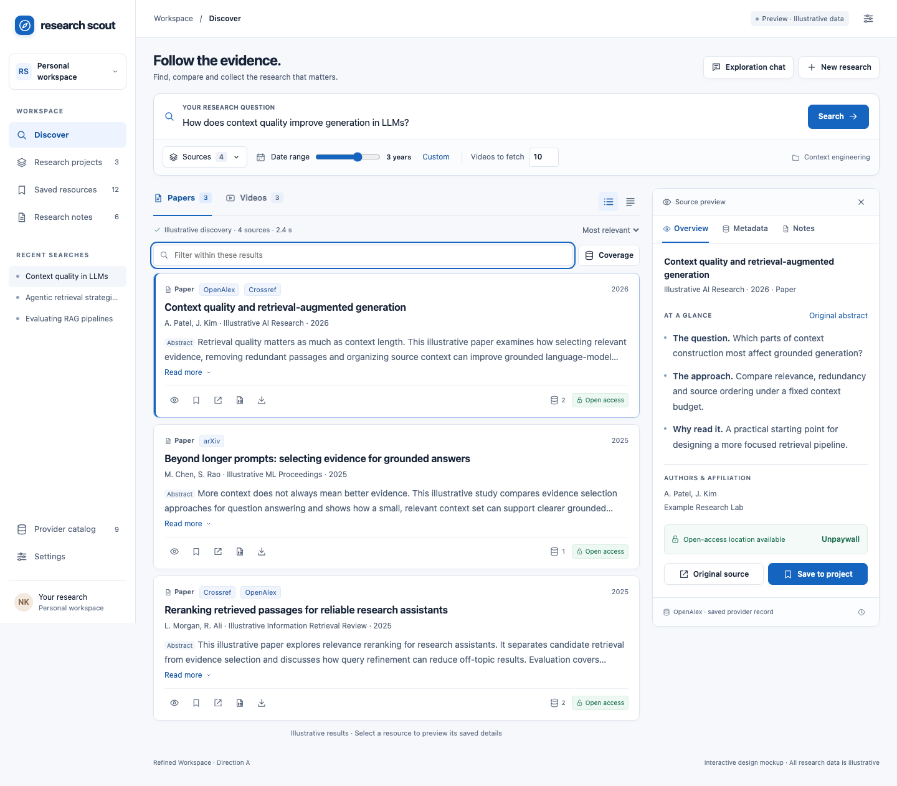
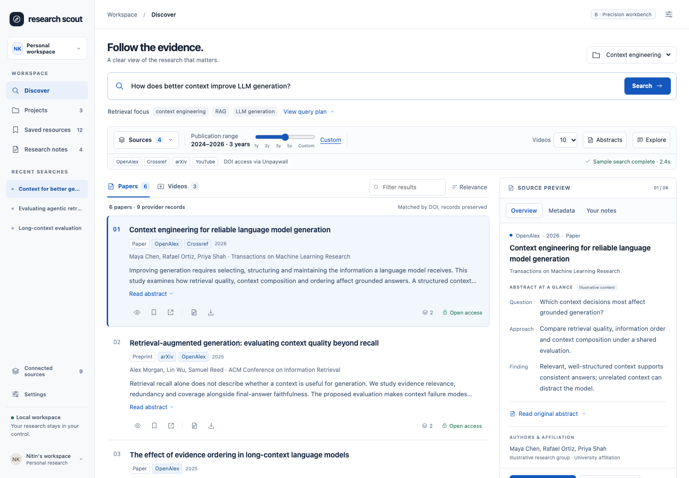
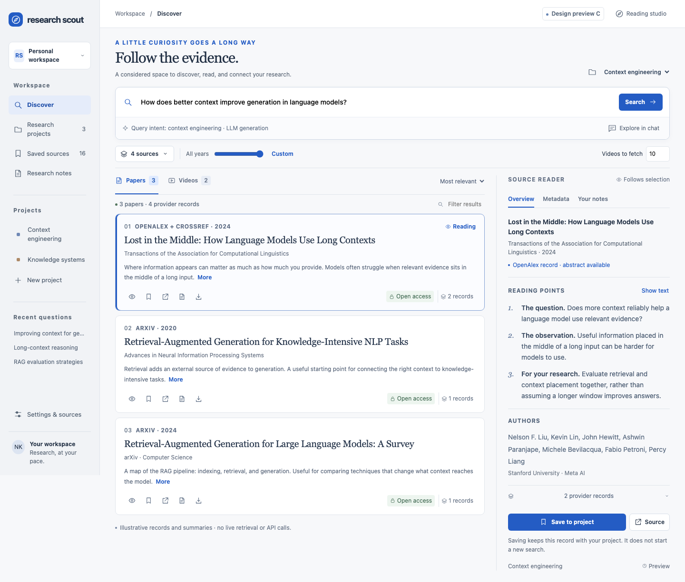

Direction 01 Suggested starting point
Refined Workspace
The closest evolution of the current app: clearer type, a compact search surface, consistent evidence cards and a reader with a stronger hierarchy.
Explore the same research journey with different levels of density and reading emphasis. These interactive HTML mockups use illustrative data and make no provider or model calls. The working app’s design has not been changed.

The closest evolution of the current app: clearer type, a compact search surface, consistent evidence cards and a reader with a stronger hierarchy.

A more analytical workspace: aligned controls and actions, denser result scanning, and explicit provider provenance kept close to the evidence.

A calmer reading experience: editorial titles, fewer competing outlines and a deliberate separation between scanning results and studying a source.
Switch Papers / Videos, select a result, expand source text, adjust the date controls and try Save to project. Search, media, captions and save feedback are local simulations.
How much evidence fits above the fold? Is the title easy to scan? Do source, access and loading states make sense? Does the reader add useful detail without repeating the whole card?
Open a mockup directly for full-width viewing. No design direction has been adopted into the application.